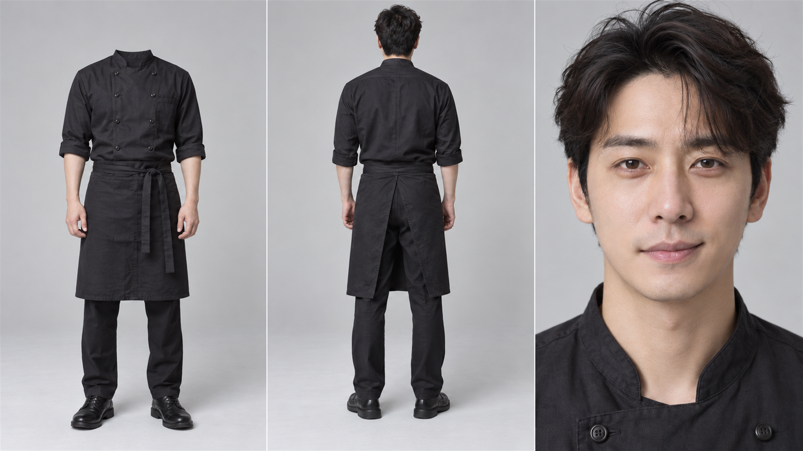
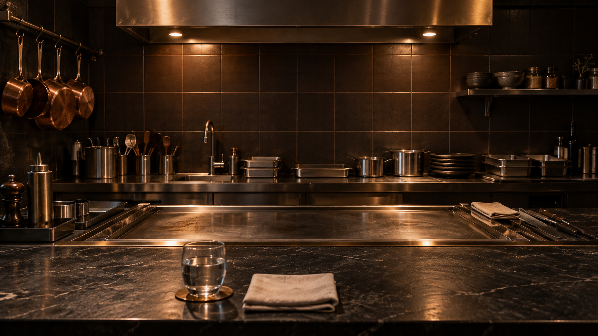
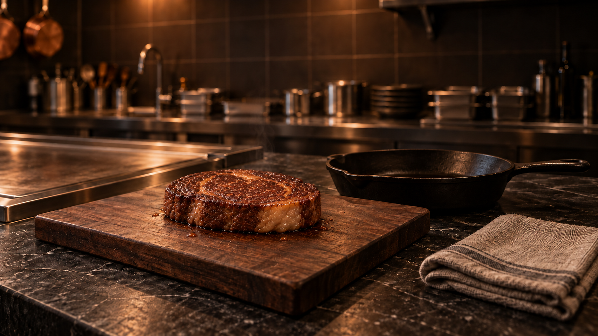
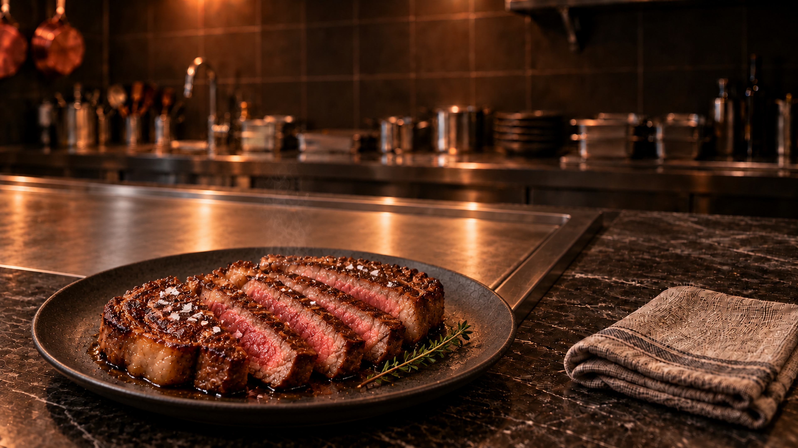

《깡셰프 배고파!》는 한 편의 AI 영상을 만드는 과정에서, 캐릭터와 공간을 먼저 확정하고 장면을 설계한 뒤 영상 생성과 편집으로 이어간 제작 실험이다.
이번 제작기에서는 무엇을 준비했고, 어떻게 장면을 나누었으며, 어떤 기준으로 결과를 채택했는지를 정리한다. 캐릭터·장소·음식 시트 작업부터 영상 생성과 1차 편집까지 하루에 진행하고, 다음 날 2시간 동안 최종 마무리한 과정의 기록이다.
인물과 공간의 기준을 먼저 세우다
두 주인공의 캐릭터 시트, 장소 시트, 스테이크를 포함한 음식 시트를 준비했다. 이 시각 자료들은 장면마다 인물과 공간의 형태가 흔들리지 않도록 기준을 마련하는 데 사용했다.
CHARACTER SHEETS · 두 주인공
캐릭터 시트는 장면을 바꾸어도 인물의 얼굴과 의상을 이어 가기 위한 기준이다. 두 주인공의 시트를 먼저 정리하고, 영상 제작에서 참조할 모습을 마련했다.


LOCATION SHEETS · 촬영 공간
장소 시트는 인물이 머무를 공간의 기준이다. 공간을 먼저 정리한 다음, Blender에서 인물의 위치와 카메라 구도를 설계하는 과정으로 이어갔다.


FOOD / STEAK · 음식의 형태
스테이크를 포함한 음식 시트도 함께 준비했다. 인물과 배경뿐 아니라 음식의 형태와 일관성까지 영상 제작의 기준 안에 두었다.


14개의 비트, 13개의 첫 채택
영상은 총 14비트로 구성했다. 13개 비트는 첫 생성 결과를 채택했고, 마지막 14비트만 한 차례 다시 생성했다.
- BEAT 01첫 생성 채택
- BEAT 02첫 생성 채택
- BEAT 03첫 생성 채택
- BEAT 04첫 생성 채택
- BEAT 05첫 생성 채택
- BEAT 06첫 생성 채택
- BEAT 07첫 생성 채택
- BEAT 08첫 생성 채택
- BEAT 09첫 생성 채택
- BEAT 10첫 생성 채택
- BEAT 11첫 생성 채택
- BEAT 12첫 생성 채택
- BEAT 13첫 생성 채택
- BEAT 141회 재생성
✓ 비트 01–13: 첫 생성 결과 채택 ↻ 비트 14: 한 차례 재생성
- 전체 비트
- 14BEATS
- 첫 생성 결과 채택
- 13FIRST-PASS BEATS
- 재생성한 비트
- 1REGENERATED BEAT
- 비트별 최초 생성 성공률
- 92.9% · 13 / 14
비트별 최초 생성 성공률은 92.9%(13/14)다. 이는 최종 영상의 14개 비트를 기준으로 집계한 기록이다. 전체 영상의 품질 성공률이나 모든 프롬프트·모든 생성 시도의 성공률을 뜻하지 않는다.
제작 순서와 시간
사전 테스트는 힉스필드에서 일주일 동안 무료로 영상을 생성할 기회가 우연히 생기면서 시작했다. 이 기회에 Wan 3.0으로 약 10회의 테스트를 진행했다. 우연히 주어진 것은 테스트를 시작할 기회였으며, 영상 제작 자체를 우연한 생성에 맡겼다는 뜻은 아니다.
약 10회의 사전 테스트와 Blender 프리비즈를 통한 사전 연출 설계는 구분되는 작업이다. 사전 테스트는 본 제작에 앞서 진행했고, Blender에서는 장소와 두 주인공의 배치 및 여러 촬영 구도를 미리 설계했다.
DAY 01에는 캐릭터·장소·음식 시트 작업과 Higgsfield Seedance 2.5를 활용한 14비트 영상 생성을 진행했다. 생성 결과를 즉시 검토하면서 DaVinci Resolve로 1차 편집을 병행했고, 이 모든 본 제작 작업을 하루 동안 진행했다. DAY 02에는 DaVinci Resolve에서 최종 색감 보정과 byKimjak 브랜드 로고 삽입을 진행해 2시간 만에 최종 영상 편집을 완료했다.
- 별도 사전 작업힉스필드의 일주일 무료 생성 기회를 계기로 Wan 3.0 약 10회 테스트 · DAY 01 본 제작 시간과 구분
- DAY 01 · 시트 작업캐릭터 · 장소 · 음식의 시각적 기준 마련
- 사전 연출 설계Blender 프리비즈로 장소·두 주인공의 배치와 촬영 구도를 설계 · 사전 테스트와 구분
- DAY 01 · 영상 생성Higgsfield Seedance 2.5로 14비트 생성 · 마지막 14비트만 1회 재생성
- DAY 01 · 1차 편집 병행생성 결과를 즉시 검토하며 DaVinci Resolve로 1차 편집 병행 · 시트 작업부터 이 단계까지 하루 동안 진행
- DAY 02 · 최종 마무리다음 날 2시간 · DaVinci Resolve에서 최종 색감 보정, byKimjak 브랜드 로고 삽입, 최종 영상 편집 완료
이번 기록의 제작 시간은 하루의 본 제작 + 다음 날 2시간의 최종 마무리다. Wan 3.0 약 10회의 사전 테스트는 별도 사전 작업으로 구분하며, 테스트 영상 중 2개는 최종 편집의 인서트로 활용했다. 힉스필드의 일주일 무료 생성 기회는 이용 기회의 기간이며, 실제 제작 소요 시간을 뜻하지 않는다.
PRODUCTION TOOLS / 제작 도구
이번 제작은 김작이 기획·연출·편집을 총괄하고, 각 도구를 단계별로 활용한 1인 제작 파이프라인이다.
| 제작 단계 | 사용 도구 | 역할 |
|---|---|---|
| Image Generation 이미지 생성 | ChatGPT Images 2.5 | 제작에 사용할 이미지 생성 |
| Image Editing 이미지 편집 | Adobe Photoshop | 이미지 편집 |
| Video Generation 영상 생성 | Higgsfield / Seedance 2.5 | 본 제작용 영상 생성 |
| Video Pre-production Test 영상 사전 테스트 | Higgsfield / Wan 3.0 | 사전 테스트 및 인서트 활용 · 약 10회 테스트 중 2개 영상을 최종 인서트로 사용 |
| 3D Previsualization 3D 프리비주얼라이제이션 | Blender | 공간·인물 배치와 카메라 구도의 사전 연출 설계 |
| Voice Generation 음성 생성 | ElevenLabs | 음성 생성 |
| Original Soundtrack 오리지널 사운드트랙 | Google Gemini | OST 제작 |
| Video Editing & Finishing 영상 편집·마무리 | DaVinci Resolve | 영상 편집과 최종 마무리 |
Wan 3.0은 힉스필드의 일주일 무료 생성 기회를 계기로 진행한 사전 테스트에 사용했다. 본편의 주요 비트는 Seedance 2.5로 제작하고, Wan 3.0 테스트 영상 중 2개를 최종 편집의 인서트로 활용했다.
생성 이전에 카메라를 설계하다
Blender에서는 장소와 두 주인공을 3D 공간에 배치하고 여러 촬영 구도를 사전에 설계했다. 영상이 생성되기 전에 카메라를 어디에 둘지, 인물과 공간을 어떤 관계로 보여 줄지 결정하는 작업이었다.
프리비즈는 최종 영상이 나오기 전, 장면을 어디서 어떻게 볼 것인지 결정하는 작업이었다.
구체적인 과정은 세 번째 제작기에서 Blender 프리비즈와 최종 AI 영상, 대표 프롬프트를 비교하며 다룬다. 비용이나 시간 절감 효과는 측정 자료가 확보되기 전까지 수치로 주장하지 않는다.
세 편으로 이어지는 제작기
- PAGE 01 · 현재 글하루의 제작, 14개의 비트
준비한 시트, 비트별 생성 기록, 제작 순서와 시간의 범위.
- PAGE 02 · 검수 중한 장면을 만드는 말
선정한 비트 01의 실제 프롬프트와 생성 영상. 원문과 영상 검토 후 최종 승인된 사례 1개만 공개한다.
- PAGE 03 · 순차 제작 예정생성 이전에 카메라를 설계하다
Blender에서 장소와 두 주인공을 배치하고 촬영 구도를 미리 설계한 과정. 프리비즈와 AI 영상 결과를 비교한다.
WATCH 포트폴리오는 공개 자산 확인 후 순차적으로 구성한다.